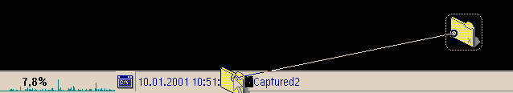

Der Inhalt dieses Menüs hängt davon ab, ob dem &xcenter; bereits Widgets
hinzugefügt worden sind und wie viele Plugin-DLLs sich im Unterverzeichnis
plugins\xcenter des &xwp;-Installationsverzeichnisses befinden.
Eine Ausnahme von dieser Regel stellen die "Objektschaltflächen"-Widgets dar, die beliebige Arbeitsoberflächen-Objekte repräsentieren. Diese Widgets können benutzt werden, um den Inhalt eines Ordners anzuzeigen (ähnlich den XFolder- Ordnerinhaltsmenüs), wenn es sich bei dem Objekt um einen Ordner handelt, oder um Objekte schnell in der Standardansicht zu öffnen, wenn es sich bei dem Objekt nicht um einen Ordner handelt.
Um ein solches Objektschaltflächen-Widget hinzuzufügen, ziehen Sie einfach ein
Objekt auf das &xcenter;, wie z.B. hier:

Um ein Widget wieder zu entfernen, klicken Sie darauf mit der rechten Maustaste
und wählen Sie "Widget entfernen" aus dessen Kontextmenü.